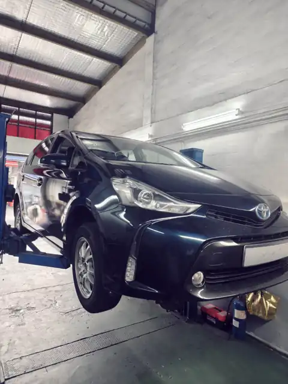
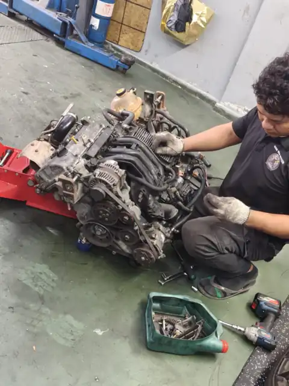
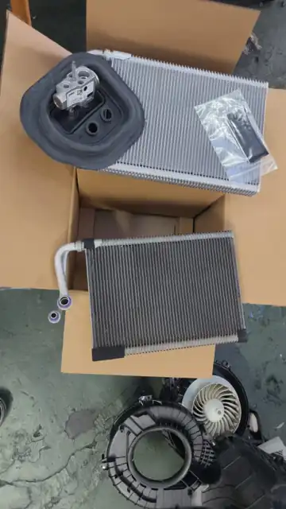
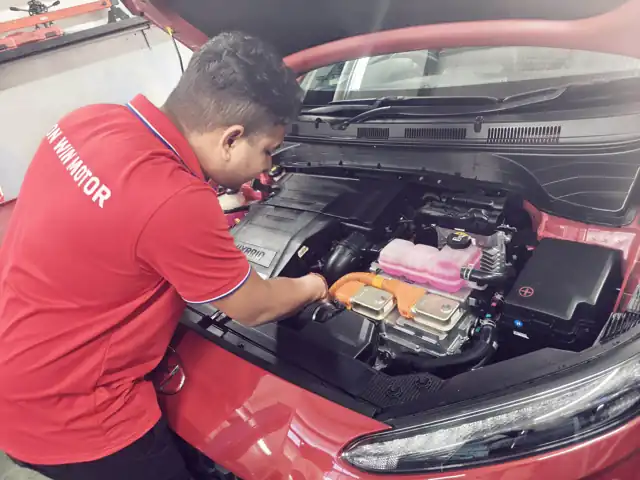
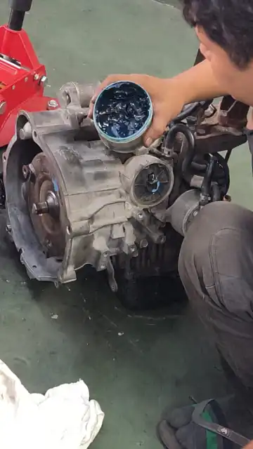
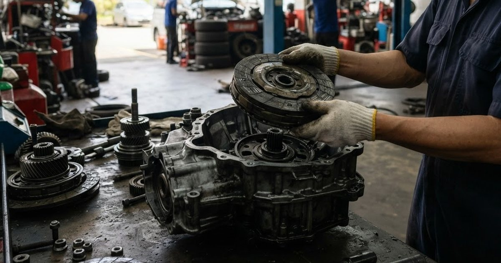

Hon Win Motor, Defu Lane
Servicing, repairs, aircon and accident claims for your car, in Hougang.
#01-5446 Defu Lane 10
Singapore 539187
What we fix
A full workshop for passenger cars: Japanese, Korean and Continental cars, petrol and hybrid, including Mercedes-Benz, Audi, Porsche and Volvo.

Car servicing
Engine oil and filter, an OBD scan, top-ups and a full safety check. Petrol and hybrid.

Car repairs
Warning lights, starting faults, overheating, engine and gearbox overhauls.

Car aircon repair
Gas top-up and leak check, cooling coils, compressors, condensers and blowers.
Accident repair and insurance claims
Accident repairs and body work, with help on your insurance claim.
Also at our workshop
- Dash cams and accessories
- Front and rear dash cams, parking mode wiring, reverse cameras, parking sensors, speakers and Android Auto head units. Bring your own parts or let us source them.
- Pre-purchase inspection
- About 1.5 hours at our workshop before you buy a used car, with an OBD scan report.
- Classic cars
- Routine maintenance, restoration and hard-to-find parts, looked after by Ah Meng, our classic car specialist.
- Lorry servicing
- Servicing, fault finding and safety checks for 10, 14 and 24-footer lorries, for owners and fleets.
How a job goes
- WhatsApp usSend your car model and what is wrong. Photos help.
- We check the carWe diagnose before we touch anything.
- You get a quoteThe price comes before any work starts, with no hidden costs.
- We fix itTowing is free if the car cannot be driven and the repair is done here.
The people on the tools
Our mechanics have over 20 years of experience. Walk-ins are welcome, and we only replace what actually needs replacing.
- ThachnaTeam leader
- Ah MengClassic car specialist
- JegaPetrol and EV specialist

Inside the workshop

What drivers say
Drivers on Google mention Mercedes oil leak and coolant repairs, spray painting and repair work, and full servicing at our workshop in Defu Lane.
Areas we serve
We are in Defu Industrial Estate, Hougang. These towns are within about 8 km of the workshop.
Latest articles

Used car inspection before you buy: what we check at Defu Lane
What a pre-purchase inspection covers, how long it takes, and how to use the report before you pay.

Car accident in Hougang or Sengkang: what to do, from the scene to the repair
The steps after a car accident: at the scene, reporting to your insurer, and getting the car repaired.

Gearbox repair or replacement: how to decide, from a Hougang workshop
Repair, overhaul or replace: how we decide what a faulty gearbox needs, and what to tell us first.
Visit the workshop
#01-5446 Defu Lane 10
Singapore 539187
Defu Industrial Estate, Hougang. Look for the red Hon Win Motor Trading signboard. Email honwinmotor@gmail.com.
Opening hours
| Monday to Friday | 10am to 7pm |
|---|---|
| Saturday | 10am to 3pm |
| Sunday | Closed |
Hours from our Google Business Profile. WhatsApp us before you come on a public holiday.
Payment
Cash, scan to pay, bank transfer, or Atome instalments.
Questions
Which cars does Hon Win Motor work on?
Mainly passenger cars: Japanese, Korean and Continental, petrol and hybrid. Its website also names Mercedes-Benz, Audi, Porsche and Volvo, and diesel vehicles.
Do I need an appointment?
Walk-ins are welcome. WhatsApp 9171 8466 first to check the workshop is free.
Will I know the price before work starts?
Yes. The car is checked first and a quote is given before any work starts.
My car cannot be driven. What do I do?
WhatsApp or call 9171 8466. Towing is free when the repair is done at the workshop.
How can I pay?
Cash, scan to pay, bank transfer, or Atome instalments.
Get a quote on WhatsApp
Tell us your car model and what you need. We reply on WhatsApp.
Featured (paid) listing on SG Car Workshop. Details from the workshop's own website and Google profile.